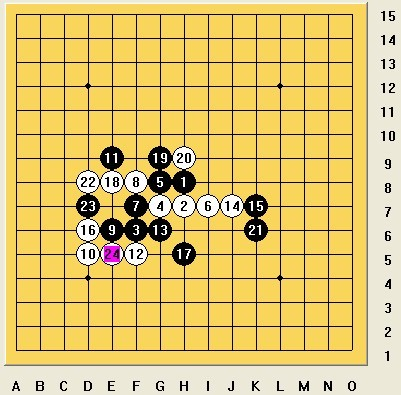
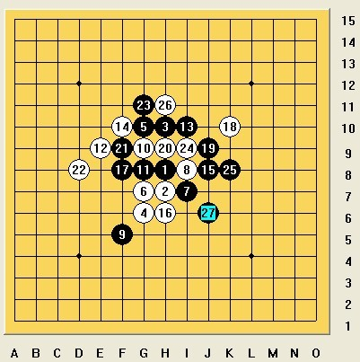

记2011年五子棋全团赛之旅
#1 记2011年五子棋全团赛之旅 作者：徐家三少 发表时间：2011-5-7 14:34:23
有N年没写日志了，今天借此机会好好写写东西！记录成长的点点滴滴。这次全团赛原本定在安徽合肥，我想那好爽，我就在合肥上学，真是天助我也，省钱省时，也能发挥的更好。去年在济南参加全团赛，搞的水土不服，回来还弄了个慢性咽炎，真是倒霉至极。可惜老天还是跟我开玩笑，都3月底了，居然要改在石家庄比赛，Oh my god!本来都打算好了棋心愉悦组4个队，可这地点一改，经费就出现问题了，我本来就不打算参加比赛了，不过后来聚贤的帅宝问我可有意向和顾贤睿（贤字-孤星）代表聚贤二队参赛，报销部分费用，我想这也不错，回去考虑下。不过后来聚贤的小老鼠推荐了另外的二个人和X组成二队，我想我的状态也确实不好，自从去年6月准备考研起，到今年的3月，有大半年的时间没下棋，计算力、棋感、定式都很差，虽然有一个多月的时间练习，恐怕也提高不了多少，再加上贤要和我一队，否则也不去了。那我就决定推出这次代表聚贤的机会，后来我又问了郭海森（淡月疏星-天字），还可以组一个队，也就是后来的安徽-棋心愉悦队，于是就这么定下来了。
4月28号中午，踏上了去南京旅程，傍晚和贤子吃了饭，就上了去石家庄的火车，我没做过卧铺，以为只有躺的地没有桌子，谁知道有一排的桌子，早知道就带盘棋了，和贤在电脑上用打谱器下，下的没劲，还是躺在床上看电子书吧！我们是早上9点多到的石家庄，足足做了将近12个小时，这要是做硬座的话，恐怕诸位是见不到我了！在宾馆看了王大叔、纪明月、洪士光（魂）、郭海森（天）、兰志仁（魄）等，还有牛牛、陈靖等，很多高手啊！在29号的一整天里，唯一没出现的是就是快字（李东），他是第二天早上才到的，还好第一轮是他们3队对1队，反正都是要1队胜的，没啥影响！到了晚上要进行抽签了，祈祷着别碰强队，还好，第一轮我们对上的是北京交通大学，可是我对的将是聚贤的小老虎（掌棋盟的虎哥），之前在网上只下过二盘，虽然是一胜一和，但感觉明天还是很难取胜的，就抱着和气的态度了，明天他开局！下面将详细介绍棋局了！
第一轮对北京交大的谢志亮，对方开疏星，我没交换。（比赛之前我就想，只要对方开疏星，我都不换）

他的这个9想了一些时间，我当时就在想他是想走这个11吗，考我知不知道定，嘿嘿，我当然知道，我10落完之后，他有想了一两分钟，莫不是真要走这个11，果然是的，我的12手也快速落下，我本以为他13手会落在E7的，那样我反三，后面也应对容易些，结果他选择了这个13，我记得是好像先冲四，再防，当时想了下，确实这么下比较好，一直走到20手，都没什么大问题，此时他开始长考了，我当时还有些疑惑，他不肯定要在左边盖我一手嘛，为啥想那么长的时间呢，我当时在想他在左边盖住我之后，我是放在I4呢，还是其他点，结果他走了这个21，我当时那个诧异啊，我在想他有V吗？有反吗？没啊，我又算了几遍，确实没啊，我那个兴奋啊，第一盘就这么结束了！
第二轮对茗弈的郭凯明，我想这应该不好对付，正好我们一台也是茗弈的，茗弈日月。他说我对手是茗弈风云，我想这下歇菜了，保和那就是我唯一的想法了。他开瑞星，我交换。（赛前我就决定了，只要对方开瑞星，我就交换，走和棋大定式，黑是不会败的，要是他不会定，还能砍他，嘿嘿！我邪恶吧 ！）

他走了这个12，我毫不犹豫的活三，然后走J8,。哈哈，真是天助我也，我落下15手后，他就开始长考了，这说明这个定他不是很熟，耶，有戏。他的20手跟定不一样，我挡在想是直接反三呢，还是直接盖，倒是平时，可能就是直接盖，但我比赛的时候就是胆小，怕出现异常情况，还是老实点，花时间想吧，当他走完这个24时，我想，恩，应该能必了。有3个活三，可一时没想出来怎么杀，我对自己说，别急，肯定能杀，结果才想出来只有几步的VCT，哎，计算的真慢，27手后，他等了老长一段时间才投，为了稳定军心，跟第一盘的小老虎一样。
第三轮对黑龙江的史玉彤，在去年的全团赛上我见过，但不知道棋力怎么样。又是他开局，疏星，不换。
#2 Re:记2011年五子棋全团赛之旅 作者：黄药师 发表时间：2011-5-7 15:22:00
QQ空间的图片 挂了~#3 Re:记2011年五子棋全团赛之旅 作者：裁决殿雪月 发表时间：2011-5-7 17:12:41
图挂了 伤不啊啊啊啊啊啊
#4 Re:记2011年五子棋全团赛之旅 作者：虎哥 发表时间：2011-5-7 18:05:41
图还是不要出来的好，太丢人了……
#5 Re:Re:记2011年五子棋全团赛之旅 作者：屏蔽 发表时间：2011-5-7 18:41:42
引用：
原文由 虎哥 发表于 2011-5-7 18:05:41 :
图还是不要出来的好，太丢人了……
没图的话，这文章的价值在哪里呢？ 
#6 Re:记2011年五子棋全团赛之旅 作者：踏雪小子 发表时间：2011-5-7 18:54:15
能看见图片啊，难道你们看不到？
#7 Re:记2011年五子棋全团赛之旅 作者：怪 发表时间：2011-5-7 19:12:43
以我经过多年淬炼的眼光看来，几幅图貌似应该没有太多的比较大的可能存在的些许稍微不同的细微地方。#8 Re:记2011年五子棋全团赛之旅 作者：逆刃 发表时间：2011-5-8 19:02:09
图片已经帮忙修改好，下次记得不要用QQ空间和百度的图片外链，需要将图片下载到电脑里面然后上传至论坛。［ 棋心愉悦飘雪 于 2011-5-12 20:19:39 时奖励此帖[金币加 100 威望加1］
#9 Re:记2011年五子棋全团赛之旅 作者：洪四 发表时间：2011-5-10 11:24:44
恭喜楼主打酱油成功！［ 棋心愉悦飘雪 于 2011-5-12 20:19:14 时花20金币送鲜花一朵］
［ 棋心愉悦飘雪 于 2011-5-12 20:20:44 时奖励此帖[金币加 100 威望加1］
［ 棋心愉悦飘雪 于 2011-5-12 20:35:02 时奖励此帖[金币加 100 威望加1］
#10 Re:记2011年五子棋全团赛之旅 作者：茗弈七夜 发表时间：2011-5-11 8:40:14
日月，辛苦了。
这次终于知道你的真名了
#11 Re:Re:记2011年五子棋全团赛之旅 作者：徐家三少 发表时间：2011-5-12 22:13:41
额，日月是一台的，我是二台！他真名叫纪明合！！！